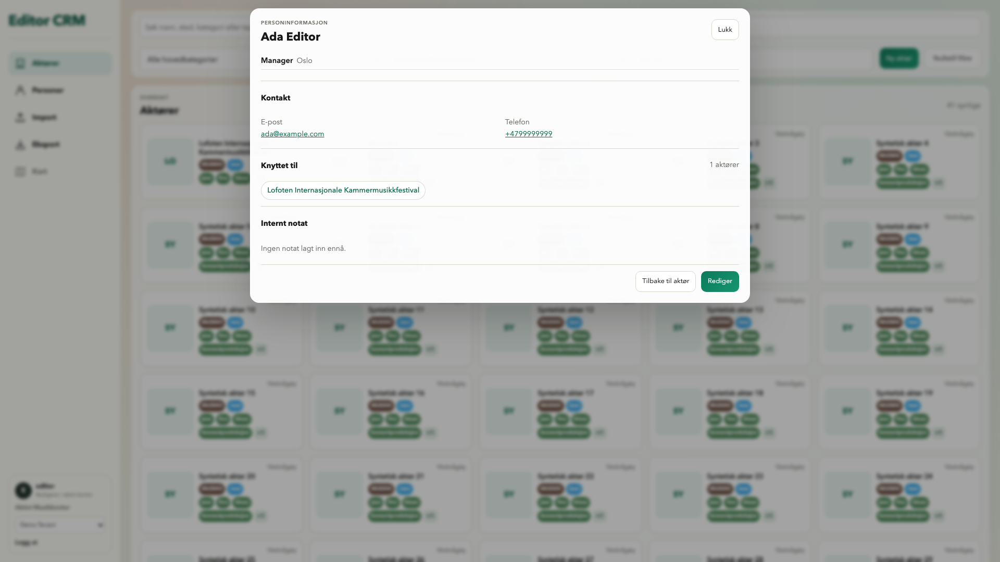
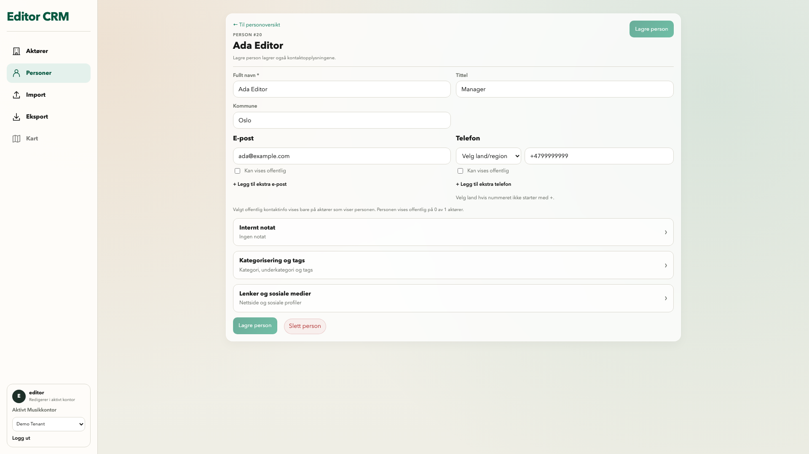

Editor CRM – lokal teknisk UI-kontroll 07.11.2026
Runtime5824541 · faktisk Vite/Chromium · eksplisitte syntetiske API-fixtures · hele viewporten, ikke fullside. Ingen staging-/backendpåstand. Adminbildet bruker egen syntetisk autorisert session. Kart er deaktivert etter eiers valg. Ingen Importbilde eller ny Import-UX.
Kontrollrapport · SHA-256-manifest
Personkort åpnet fra kontaktperson · 1920 × 1080

Rediger person – én synlig feltetikett · 1920 × 1080
